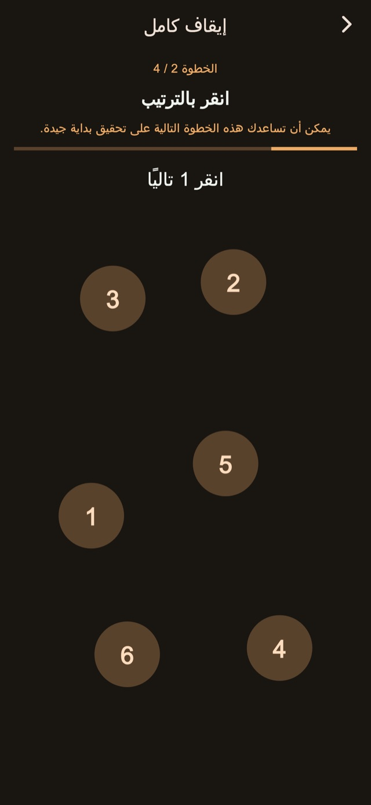
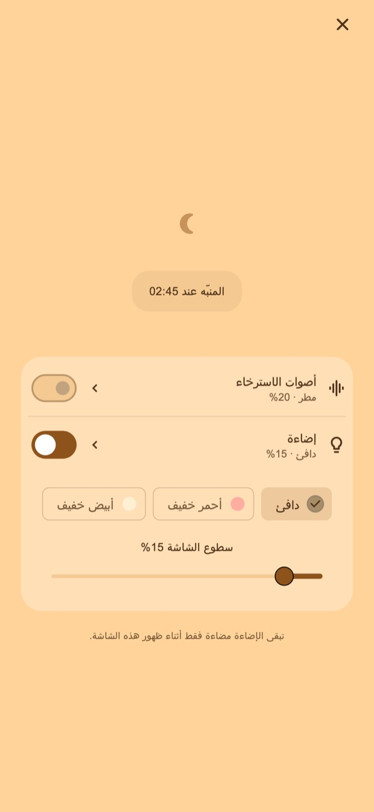

أصوات الاسترخاء
استمع للمطر أو الأمواج أو الضوضاء البيضاء. لا يبدأ الصوت إلا عندما تشغله، ويتلاشى ليتوقف عند المنبه الأول.
منبه بالاهتزاز للقيلولة وللنهوض بعد تنويم طفلك
لمن تطول غفوتهم أو يغلبهم النوم أثناء تهدئة طفلهم لينام.
01أنماط الاهتزاز
تتغير مدة الاهتزازات وإيقاعها لتختلف عن إشعاراتك المعتادة. هذا الإحساس غير المألوف مصمم ليساعدك على ملاحظة المنبه والاستيقاظ.
نبضات قصيرة وطويلة ومتتابعة. اختر من أربعة أوضاع أساسية: عشوائي، شبيه بالإشعارات، يغلب عليه الطويل أو يغلب عليه القصير. يتغير الإيقاع مع مدة النبضات والفواصل. يمكنك تجربته قبل ضبط المنبه.
أنماط الاهتزاز
02عدة تنبيهات
أوقف التنبيه الحالي فقط للإبقاء على التالي، أو أنهِ المجموعة لإلغاء ما تبقى.
حفظ عدد التنبيهات والفاصل بينها ميزة Premium.
عدة تنبيهات
أنهِ المجموعة عند النهوض
03مهام الإيقاف
الحساب، ولمس الأرقام بالترتيب، والضغط المطول، واللمسات المتكررة ترافق الإيقاف والغفوة. الخطوات الأساسية متاحة. تعديل الخطوات ودمجها يتطلب Premium.

الشاشة الليلية
اضبط السطوع وطريقة عرض الساعة. يمكنك إخفاء العرض بعد فترة قصيرة دون تفاعل، ثم لمسه لإظهار الساعة وأدوات التحكم مجددًا.
اختر مدة، مثل 30 دقيقة، أو وقتًا للنهوض.
اترك الشاشة الليلية مفتوحة، وشغّل الصوت أو الضوء إذا رغبت.
أكمل خطوات الإيقاف وأنهِ المجموعة عندما تنهض.
أصوات هادئة وإضاءة قابلة للتعديل
للقيلولة أو لتنويم طفلك. شغّلهما من الشاشة الليلية عند الحاجة.
استمع للمطر أو الأمواج أو الضوضاء البيضاء. لا يبدأ الصوت إلا عندما تشغله، ويتلاشى ليتوقف عند المنبه الأول.
اختر إضاءة دافئة أو حمراء باهتة أو بيضاء ناعمة واضبط سطوعها.
الأساسيات مجانية

مجاني / Premium
تتضمن أربعة أوضاع للاهتزاز، وإيقافًا وغفوة بخطوات أساسية، وشاشة ليلية وأصواتًا وإضاءة. تظهر إعلانات في بعض الشاشات.
| الميزة | مجاني | Premium |
|---|---|---|
| أنماط الاهتزاز | ✓ | ✓ |
| عدة تنبيهات | إعدادات أساسية | قابل للتخصيص |
| مهام الإيقاف | إعدادات أساسية | قابل للتخصيص |
| الشاشة الليلية / أصوات الاسترخاء / إضاءة | ✓ | ✓ |
| إنشاء أنماط اهتزاز خاصة وتعديلها. | — | ✓ |
| إزالة كل الإعلانات. | — | ✓ |
اختر خطة شهرية أو شراءً لمرة واحدة. تتجدد الخطة الشهرية تلقائيًا ويمكن إدارتها أو إلغاؤها في إعدادات حساب المتجر. راجع الأسعار والشروط قبل الشراء.
الأسئلة الشائعة
لاستخدام أنماط الاهتزاز الخاصة بالتطبيق، اترك الشاشة الليلية مفتوحة بعد ضبط المنبه. عند القفل بالزر الجانبي أو الانتقال لتطبيق آخر، يصبح الاهتزاز تحت تحكم iOS ولا يُطبّق النمط والقوة المخصصان. تحقق من الأذونات وإعدادات الاهتزاز، واختبر التشغيل قبل الاستخدام.
استمع للمطر أو الأمواج أو الضوضاء البيضاء. لا يبدأ الصوت إلا عندما تشغله، ويتلاشى ليتوقف عند المنبه الأول. اختر إضاءة دافئة أو حمراء باهتة أو بيضاء ناعمة واضبط سطوعها.
تتضمن أربعة أوضاع للاهتزاز، وإيقافًا وغفوة بخطوات أساسية، وشاشة ليلية وأصواتًا وإضاءة. تظهر إعلانات في بعض الشاشات. إزالة كل الإعلانات. تعديل عدد التنبيهات والفاصل بينها. تحرير خطوات الإيقاف والغفوة. إنشاء أنماط اهتزاز خاصة وتعديلها. اختر خطة شهرية أو شراءً لمرة واحدة. تتجدد الخطة الشهرية تلقائيًا ويمكن إدارتها أو إلغاؤها في إعدادات حساب المتجر. راجع الأسعار والشروط قبل الشراء.
تنزيل
منبه بالاهتزاز للقيلولة وللنهوض بعد تنويم طفلك
الأساسيات مجانية
iPhone: iOS 26.1+ / Android: 8.0+